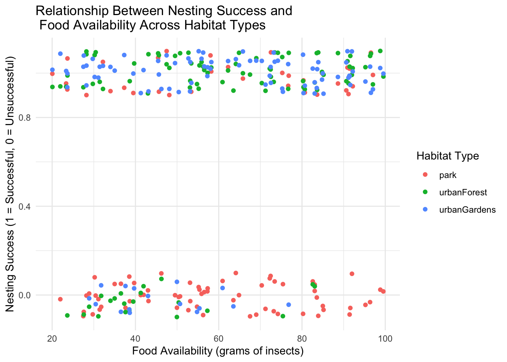
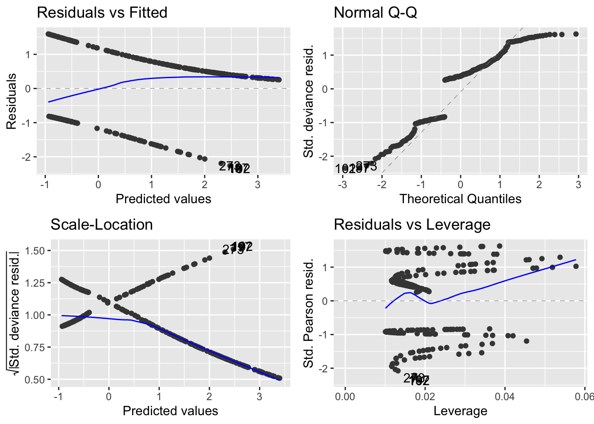
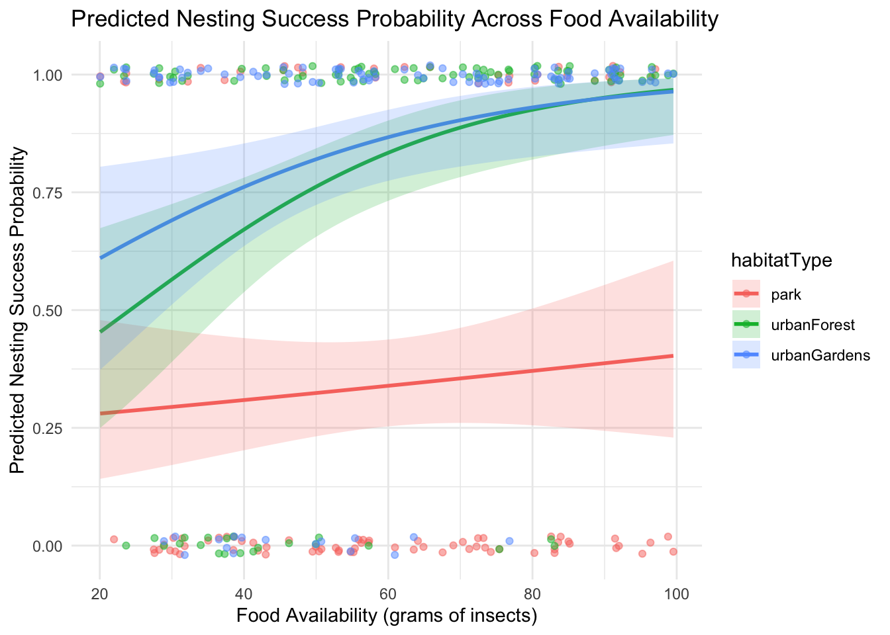

Chapter 30 Question 4:
This question examines the relationship between habitat characteristics, specifically habitat type and food availability, and bird nesting success in urban and suburban settings. Understanding this interplay is key to grasping ecological dynamics like resource availability and habitat suitability in increasingly urbanized landscapes.
First I import the data and take a quick look at it:
## foodAvailability nestSuccess habitatType
## Min. :20.05 Min. :0.0000 Length:300
## 1st Qu.:39.64 1st Qu.:0.0000 Class :character
## Median :57.31 Median :1.0000 Mode :character
## Mean :59.88 Mean :0.6567
## 3rd Qu.:80.44 3rd Qu.:1.0000
## Max. :99.54 Max. :1.0000##
## park urbanForest urbanGardens
## 100 100 10030.1 a)
For this part, I make a plot showing the relationship between nesting success and food availability. There is more than one approach to this.
Here are a couple of examples:
ggplot(nesting,aes(x = foodAvailability,y = nestSuccess, color = habitatType)) +
geom_jitter(height = 0.1) +
labs(title = "Relationship Between Nesting Success and\n Food Availability Across Habitat Types",
x = "Food Availability (grams of insects)",
y = "Nesting Success (1 = Successful, 0 = Unsuccessful)",
color = "Habitat Type") +
theme_minimal() Another example:
ggplot(nesting,aes(x = as.factor(nestSuccess),y = foodAvailability, color = habitatType)) +
geom_boxplot() +
labs(title = "Relationship Between Nesting Success and\n Food Availability Across Habitat Types",
y = "Food Availability (grams of insects)",
x = "Nesting Success (1 = Successful, 0 = Unsuccessful)",
color = "Habitat Type") +
theme_minimal()
There seems to be a variation in food availability across different habitat types.
For each habitat type, there is a comparison of food availability between nests that were successful and those that were not. Successful nests tend to have more food availability. This difference is quite small in parks though.
30.2 b)
In a report, I’d write this:
Methodology
In this study, I used a GLM to fit a logistic regression to evaluate the impact of habitat type and food availability on nesting success probabilities among urban bird populations. A logistic GLM is particularly suitable for models where the dependent variable is binary. Here, the response variable, ‘nestSuccess’, is defined as binary: ‘1’ denoting a successful nest and ‘0’ denoting an unsuccessful one. The explanatory variables in this model were ‘habitatType’ and ‘foodAvailability’. ‘HabitatType’ is a categorical variable categorizing urban habitats into distinct types: urban forest, park, and urban garden. ‘FoodAvailability’, a continuous variable, quantifies the biomass of insects in grams, serving as an indicator of resource abundance. I included an interaction term between ‘habitatType’ and ‘foodAvailability’. This term is needed to assessing whether habitat type influences the effect of food availability on nesting success. This interaction potentially reveals whether certain urban habitats provide a buffering effect or exacerbate the influence of resource availability on nesting success.
Here’s how I fit this model:
I can first look at some diagnostic plots to check that it is OK. It is hard to really see whether this is appropriate, but based on the response variable being 0-1, it is probable that the binomial GLM is appropriate.

Then I can summarise the model to see what it tells us about nesting success.
The anova summary tells us whether the terms in the model (habitat and food availability) are important predictors of nesting success.
## Analysis of Deviance Table
##
## Model: binomial, link: logit
##
## Response: nestSuccess
##
## Terms added sequentially (first to last)
##
##
## Df Deviance Resid. Df Resid. Dev Pr(>Chi)
## NULL 299 385.93
## habitatType 2 67.001 297 318.93 2.825e-15 ***
## foodAvailability 1 14.998 296 303.93 0.0001076 ***
## habitatType:foodAvailability 2 6.636 294 297.30 0.0362179 *
## ---
## Signif. codes: 0 '***' 0.001 '**' 0.01 '*' 0.05 '.' 0.1 ' ' 1It appears that both habitat type and food availability both explain a very significant amount of variation in nesting success. There is also a significant interaction, meaning that the effect of food availablity on success depends on the habitat.
We can look at the variance explained by comparing the Deviances of each term with the NULL deviance of 385.93.
(67.001 + 14.998 + 6.636)/385.93 = 0.229666
In other words, the model explains 22.97% of the variation in nesting success. Of the variance explained, 76% is explained by habitat type and 17% is explained by food availability, while 7% is explained by the interaction between them.
The latter part is calculated like this:
> x <- c(67.001, 14.998, 6.636)
> x/sum(x)
[1] 0.75592035 0.16921081 0.07486884I’d write that part of the results like this:
Results
The deviance analysis of our logistic regression model demonstrated significant influences of both habitat type and food availability on nesting success in urban birds (Binomial GLM: Null Deviance = 385.93, residual df = 299). The inclusion of habitat type accounted for a substantial reduction in deviance (Deviance = 67.001, df = 2, p < 0.0001), and the addition of food availability further reduced the deviance (Deviance = 14.998, df = 1, p < 0.0001). This suggests that both habitat characteristics and available food resources play crucial roles in determining the probability of nesting success. The model explained 22.97% of the variance in nest success, with habitat type being the major contributor, accounting for 76% of the explained variance.
There are certainly other ways to write this, including adding a table of results. This way is probably the most succinct though.
The other summary tells us what those effects are: it gives us the coefficients of the model.
##
## Call:
## glm(formula = nestSuccess ~ habitatType * foodAvailability, family = binomial,
## data = nesting)
##
## Coefficients:
## Estimate Std. Error z value Pr(>|z|)
## (Intercept) -1.081094 0.608535 -1.777 0.0756
## habitatTypeurbanForest -0.009808 0.935117 -0.010 0.9916
## habitatTypeurbanGardens 0.812687 0.960792 0.846 0.3976
## foodAvailability 0.006911 0.009350 0.739 0.4598
## habitatTypeurbanForest:foodAvailability 0.038182 0.016610 2.299 0.0215
## habitatTypeurbanGardens:foodAvailability 0.028817 0.016981 1.697 0.0897
##
## (Intercept) .
## habitatTypeurbanForest
## habitatTypeurbanGardens
## foodAvailability
## habitatTypeurbanForest:foodAvailability *
## habitatTypeurbanGardens:foodAvailability .
## ---
## Signif. codes: 0 '***' 0.001 '**' 0.01 '*' 0.05 '.' 0.1 ' ' 1
##
## (Dispersion parameter for binomial family taken to be 1)
##
## Null deviance: 385.93 on 299 degrees of freedom
## Residual deviance: 297.30 on 294 degrees of freedom
## AIC: 309.3
##
## Number of Fisher Scoring iterations: 5These are hard to interpret, so I’ll use the help of lines on a plot (this also contributes to answering question 4c).
This is how I do that. First I set up a data frame containing data to predict from.
# Create a new data frame for predictions
foodAvailabilityRange <- seq(min(nesting$foodAvailability), max(nesting$foodAvailability), length.out = 100)
habitatLevels <- unique(nesting$habitatType)
predictionsData <- expand.grid(foodAvailability = foodAvailabilityRange, habitatType = habitatLevels)Next, I use the model (mod1) to predict the probability of nest success from these data. I set the argument se.fit = TRUE so that the model gives me the standard error of the fit.
# Obtain predicted probabilities and standard errors
predictions <- predict(mod1, newdata = predictionsData, se.fit = TRUE)I can then add those predictions to the predictionsData data frame. Here I use the suffix “..._LP” to signify that these values are on the scale of the linear predictor (logit), not the natural (probability) scale.
Furthermore, I calculate the 95% confidence intervals (95% CI) for the fitted values as 1.96 times the standard error. It is important that I do this before I backtransform the values to the probablity scale.
predictionsData$lowerCI_LP <- predictions$fit - 1.96 * predictions$se.fit
predictionsData$upperCI_LP <- predictions$fit + 1.96 * predictions$se.fitAfter doing all that I can backtransform these predicted values on to the natural (probability) scale and add those points into the predictionsData data frame. To do that, I use the inverse logit function, which I can get from the model like this:
inverseFunction <- family(mod1)$linkinv
predictionsData <- predictionsData %>%
mutate(
fit = inverseFunction(fit_LP),
lowerCI = inverseFunction(lowerCI_LP),
upperCI = inverseFunction(upperCI_LP)
)# Plotting the observed data and adding the prediction lines with standard error ribbons
ggplot(nesting, aes(x = foodAvailability, y = nestSuccess, color = habitatType)) +
geom_jitter(height = 0.02, alpha = 0.5) +
geom_line(data = predictionsData, aes(x = foodAvailability, y = fit, color = habitatType), size = 1) +
geom_ribbon(data = predictionsData, aes(x = foodAvailability, ymin = lowerCI, ymax = upperCI, fill = habitatType), alpha = 0.2, inherit.aes = FALSE) +
labs(title = "Predicted Nesting Success Probability Across Food Availability",
x = "Food Availability (grams of insects)",
y = "Predicted Nesting Success Probability") +
theme_minimal()## Warning: Using `size` aesthetic for lines was deprecated in ggplot2 3.4.0.
## ℹ Please use `linewidth` instead.
## This warning is displayed once every 8 hours.
## Call `lifecycle::last_lifecycle_warnings()` to see where this warning was
## generated.
A suitable caption for the figure would be:
Figure X: Probability of nesting success in relation to food availability, differentiated by habitat type. Points indicate the raw data, with each point representing a single nest, colour coded by habitat type. The lines represent the predicted probabilities from a binomial GLM, while the shaded areas show 95% confidence intervals around these predictions.
And for this part of the results I would write something like this:
It is evident from the Figure that as food availability increases, the predicted probability of nesting success also increases for all habitat types. The shaded areas around each line represent 95% confidence intervals, indicating the degree of uncertainty around the predictions. These intervals appear to be wider for parks and narrower for urban forests and gardens, suggesting that there is greater variation in survival in park areas.
Urban forests and gardens show a relatively high and quite similar probability of nesting success even at lower levels of food availability, which remains consistently high across the range of food availability. In contrast, parks show a lower probability of nesting success at low food availability levels, with the probability increasing at a slower rate as food availability rises. Overall, is clear shows that both habitat type and food availability are influential factors in nesting success, but that the impact of food is much lower in park areas.